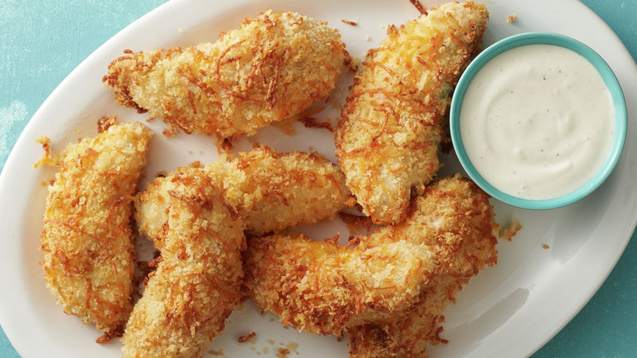

Ranch Flavored Chicken Strips

Chicken strips with the ranch build in!
Simple to make. Kids will love them!
They can even help with the cooking.
You can still dip them, if that's what you want, but they are also wonderful by themselves.
Another pro to this recipe, since they are baked
you can actually make these and, for the most part,
let the oven do a majority of the cooking for you!
Ingredients:
- 4 Bonesless, skinless chicken breasts
- 3/4 Cup bread crumbs
- 1 Packet of ranch dressing powder mix
- 1 1/2 teaspoons Morton Nature's seasoning
Steps:
- Mix the dry ingredients
- Cover chicken with dry mix
- Spray baking sheet with oil lightly
- Bake chicken in over for 40-50 minutes at
75 degrees until golden brown